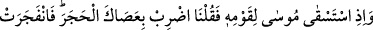
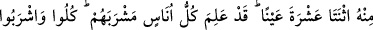
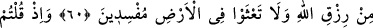
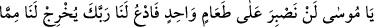
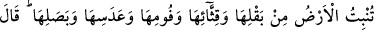
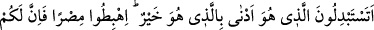
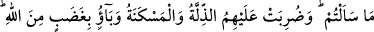
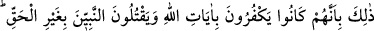
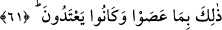

ONİKİ PINAR
60. Mûsâ (çölde) kavmi için su istemişti de biz ona: değneğinle taşa vur! demiştik.
Derhal (taştan) on iki kaynak fışkırdı. Her bölük, içeceği kaynağı bildi. (Onlara:)
Allah’ın rızkından yeyin, için, sakın yeryüzünde bozgunculuk etmeyin, dedik.
61. Hani siz (verilen nimetlere karşılık): Ey Mûsâ! Bir tek yemekle yetinemeyiz;
bizim için Rabbine duâ et de yerin bitirdiği şeylerden; sebzesinden, hıyarından,
sarımsağından, mercimeğinden, soğanından bize çıkarsın, dediniz. Mûsâ ise: Daha
iyiyi daha kötü ile değiştirmek mi istiyorsunuz? O halde şehre inin. Zira
istedikleriniz sizin için orada var, dedi. İşte (bu hâdiseden sonra) üzerlerine
aşağılık ve yoksulluk damgası vuruldu. Allah’ın gazabına uğradılar. Bu musîbetler
(onların başına), Allah’ın âyetlerini inkâra devam etmeleri, haksız olarak
peygamberleri öldürmeleri sebebiyle geldi. Bunların hepsi, sadece isyânları ve
taşkınlıkları sebebiyledir.
Allah Teâlâ, bu âyette İsrâîloğulları’nın nankörlük ettiği başka bir nimeti zikretmekte
ve “ey İsrâîloğulları, Mûsâ’nın kavmi için su istediği zamanı hatırlayın”
buyurmaktadır. Tîh çölünde giderlerken İsrâîloğulları müthiş bir susuzluğa mârûz
kalmışlar ve Mûsâ’dan yardım istemişlerdi. O da Rabbine duâ etmişti. Allah Teâlâ ona
vahyen, “asâsıyla taşa vurmasını” emretmişti. Mûsâ’nın asâsı on zirâ boyunda,
Mûsâ’nın uzunluğuna eşit bir cennet asâsıydı. Asânın iki dalı olup her biri karanlığı
aydınlatan bir nûr saçardı. Âdem (a.s.), bu asâyı cennetten getirmiş, ondan sonra da
peygamberlere miras kalmıştı. En son Şuayb (a.s.)’a ulaşan asâ, ondan da Mûsâ’ya
geçmişti.